Grupo 12 · Nosso desafio
Cada caminho tem um movimento.
Como torná-lo visível?
A Bússola de Fluxo Urbano investiga como transformar a circulação recente de pedestres em uma informação simples, disponível no próprio lugar da escolha.

01 · De onde partimos
A cidade muda ao longo do dia.
Nossa pesquisa começou com a vulnerabilidade de pessoas em espaços públicos do Recife durante a noite, entre 18h e 5h. Paradas de ônibus, praças e trajetos a pé ajudaram o grupo a investigar a relação entre circulação, informação e percepção de segurança.
Ao refinar o projeto, concentramos a pergunta em uma situação concreta: a escolha entre caminhos quando não se conhece a movimentação recente de cada um.

02 · O problema que investigamos
Na próxima esquina,
qual caminho seguir?
Uma pessoa pode conhecer o destino e ainda ter dúvidas sobre o percurso. Quando os caminhos não são visíveis por inteiro, a escolha pode depender do hábito, de uma impressão momentânea ou de informações que não descrevem a circulação naquele momento.
O desafio do grupo é tornar o fluxo recente de cada alternativa mais fácil de perceber. A hipótese é que essa informação possa apoiar a decisão do pedestre, especialmente em situações de isolamento percebido.
Mais passagens indicam maior fluxo detectado. A segurança de uma rota depende também de outros fatores.

03 · A direção do projeto
Transformar movimento
em orientação.
A Bússola de Fluxo Urbano propõe uma interface física em pontos com diferentes caminhos. A partir de passagens detectadas em cada rota, o sistema compara as contagens em um intervalo recente e orienta um ponteiro para a alternativa com maior fluxo.
O núcleo do protótipo foi pensado para funcionar localmente, sem exigir celular, cadastro, internet ou captura de imagens. A compreensão da indicação e a confiabilidade da detecção são aspectos a testar.
Nossa pergunta de projeto
Como tornar o fluxo recente de pedestres visível e compreensível para apoiar a escolha entre caminhos no espaço público?
Praças, campi, calçadões e terminais são contextos possíveis para explorar essa proposta. O recorte inicial noturno orienta a investigação, enquanto a utilidade da informação ainda precisa ser avaliada com pessoas.
Uma leitura física, próxima ao pedestre e conectada às alternativas de caminho.
O núcleo proposto registra eventos de circulação, sem depender de imagens ou cadastro.
O protótipo permite investigar a detecção, a compreensão da interface e seus limites.
Ilustrações: Storyset / Freepik.